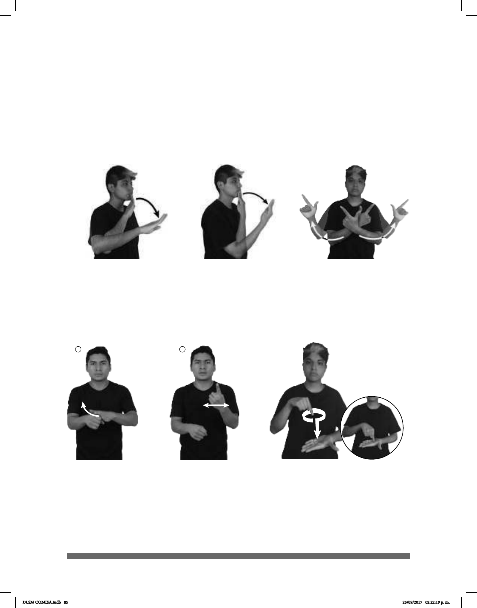

85
1 2
LUGAR
¿POR QUÉ?
MAL
LIBRE
BIEN
En el caso de ¿por qué?, la orientación de la palma de la mano dominante también
cambia, primero hacia abajo y después hacia adentro. En este tipo de señas, la mano
dominante roza la mano base, al igual que en la seña de lugar; sin embargo, en esta
última, la palma de la mano dominante no cambia su orientación.
Por otro lado, existen señas que requieren de sólo una mano, como mal y bien, en las que
sí cambia la orientación de la palma. En mal, la orientación primero es hacia enfrente y,
por el tipo de movimiento, la palma se orienta nalmente hacia abajo. En el caso de bien,
la palma primero está orientada hacia adentro y después su orientación cambia hacia
arriba.
Lo mismo ocurre, por ejemplo, con la seña de libre (seña simétrica simultánea) donde
inicialmente las palmas de las manos están orientadas hacia adentro y, posteriormente,
cambian hacia afuera.
DLSM COMISA.indb 85 25/09/2017 02:22:19 p. m.